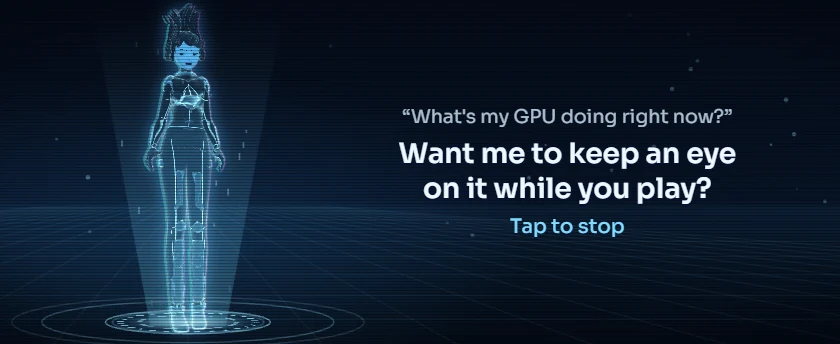
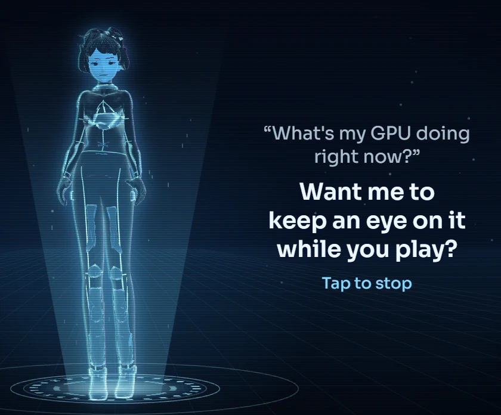

Vela
iCUE widget In development
A voice assistant for your desk: an original hologram on a projector pad. Tap the Edge, ask out loud, and she answers with subtitles in a natural voice.
Sizes
Every slot on the Xeneon Edge, smallest first, drawn to scale. Pick the one that fits your layout.




What it does
- Tap and talk. She stops listening when you stop talking, or tap again to send. Claude Code answers and she speaks it a sentence at a time, so the first words come about four seconds after you finish.
- An original character in a 1990s anime style, projected as blue light with scanlines and film grain. She blinks, her lips move with her voice, and the pad and beam under her pulse with the microphone and her voice.
- She reacts: she leans in while you talk, lines of data rise through her while she thinks, and she hops when you touch her.
- Subtitles, not a chat log: whole sentences, never cut off, with a cue that tells you what a tap does right now.
- Hears you locally: Whisper on your graphics card, far more accurate than the Windows recognizer.
- Speaks locally or from the cloud: a built-in open voice, Azure or ElevenLabs stock voices, or a voice you record yourself.
- Record a voice: the person reads a consent line and a short script, about two minutes, and Vela can speak in their voice. It stays on your PC, and you can delete it any time.
Set it up
- Run the included installer once. It sets up the voice helper and downloads the speech models (about 10 GB).
- Open iCUE and select the Xeneon Edge.
- Open the widgets section and press the plus button.
- Pick the .icuewidget file you downloaded, or install it straight from Elgato Marketplace inside iCUE once it is listed there.
- Drag the widget into a slot. Hold it to open its settings: colours, transparency and what it shows.
- Tap the widget and ask something. The first answer after a break takes a few seconds longer while the voice loads.
- To change her voice or record a new one, open Voices in the voice window.
Permissions
iCUE asks you to approve these when you install. Here is what each one is for. Everything stays on this PC unless a line says otherwise.
- Local helper app
localhost:13509 - Talks to a small helper app on this PC. It answers only widgets on this PC and never opens anything to the internet. Why: Reads what the voice assistant is doing (listening, thinking, speaking), what she has said so far and how loud the voice is, to draw her on the widget. Swipe between Edge pages even when your finger starts on this widget. iCUE alone only swipes from the gaps between widgets.
- Open links
iCUE URL plugin - Opens a link or an app when you tap. Why: Starts listening when you tap, sends or stops on the next tap, and starts the helper app if it is not running, so the widget fixes itself.
Support development
Free projects stay free. Tips fund new widgets, plugins and updates.
Tip in SOL
73jwsxMDvQMAiGdVpiRuCj6FgmSVHoqQy9bTMmNkMJGH
Tip in ETH
0xCfECCb807ac283D4A949e27a0D687f657d00CfA0
Tip in BTC
bc1q6cyvqz4kpgv4zqeelgq55xnsmjgg6utf0f3aat
Send each coin only to its own address, on its own network. Crypto transfers cannot be reversed.